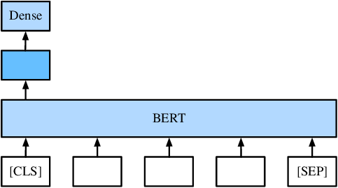
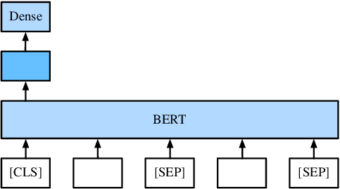
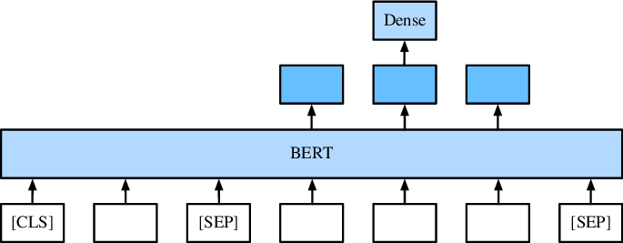
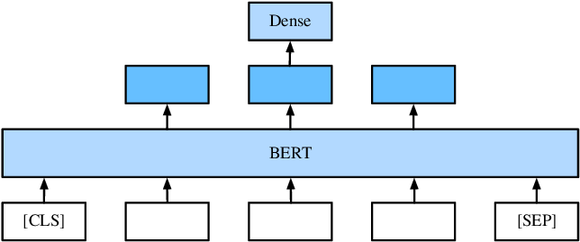

在“双向语言表征模型（BERT）”章节中，我们提到BERT在预训练阶段完成后，如果要适用于广泛的任务时，只需要一个额外的输出层，就可以对预训练的 BERT表示进行微调，从而无需对特定于任务进行大量模型结构的修改。 在这一节我们将介绍如何将BERT接入下游任务，并通过下游任务微调BERT。
在获得训练好的BERT后，最终只需在BERT的输出层上加简单的多层感知机或线性分类器即可。
单句分类任务如情感分析、文本分类。
输入：This movie is great. 标签：积极
直接取“[CLS]”位置的输出表示接入全连接层作为输出。

句对分类任务如自然语言推理。
前提：Two blond women are hugging one another. 假设：There are women showing affection. 关系：蕴含 （展示爱意可以由互相拥抱推理得出）
需要将两个句子拼接，在每个句子的结束位置加入“[SEP]”标记，最终取“[CLS]”位置的输出表示接入全连接层作为输出。

问答是指给定问题和描述文本，这是从描述文本中找到答案。 对于问答这种抽取式任务，取第二个句子每个位置的输出表示作为下游任务的输入。
文本：Input_0: KDD 2019 is held in Anchorage 问题: Where is KDD held 输出: 在文本中标定“Anchorage”

序列标注任务如命名实体识别，确定一个词是否是命名实体，例如人员，组织和位置。
取除了特殊标记外其他位置的输出表示接入全连接层作为输出。
输入: Jim bought 3000 shares of Amazon in 2006. 输出: [person] [organization] [time]
